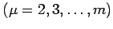
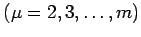

Bei elementaren Umformungen ändert sich der Rang von Matrizen nicht. Elementare Umformungen in diesem Zusammenhange sind:
-
Vertauschung zweier Zeilen miteinander oder zweier Spalten miteinander,
-
Multiplikation einer Zeile oder Spalte mit einer Zahl ungleich Null und
-
Addition einer Zeile zu einer Zeile oder einer Spalte zu einer Spalte.
Zur Bestimmung ihres Ranges kann man daher jede Matrix durch geeignete Linearkombinationen der Zeilen so umformen, daß in der  -ten Zeile  mindestens die ersten Elemente gleich Null werden (s. Prinzip des GAUSSschen Algorithmus). Die Anzahl der vom Nullvektor verschiedenen Zeilenvektoren in der so umgeformten Matrix ist dann gleich ihrem Rang
-ten Zeile  mindestens die ersten Elemente gleich Null werden (s. Prinzip des GAUSSschen Algorithmus). Die Anzahl der vom Nullvektor verschiedenen Zeilenvektoren in der so umgeformten Matrix ist dann gleich ihrem Rang